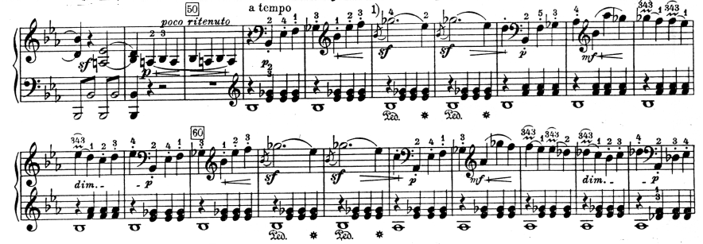

«Патетическая» соната Бетховена
Соната №8, названная Бетховеном «Большой патетической», стала вершиной его раннего сонатного творчества. По сравнению с первыми драматическими сонатами (№1 и №5), в «Патетической» углубляется содержание, появляются трагические мотивы, усиливается мужественное, героическое начало, обостряются контрасты при внутренней монолитности формы. Но главная особенность «Патетической», созданной в период увлечения Глюком, это её подчеркнутая театральность. Недаром вокруг этого произведения разгорелась полемика не менее бурная, чем по поводу какой-нибудь оперной премьеры. Новизна её стиля на фоне привычного изящного искусства была ясно почувствована всеми, хотя мнения были полярно противоположными: раздавались голоса и восхищения, и полные негодования (см. рассказ Мошелеса).
1 часть
Словно персонажи драмы сталкиваются в борьбе контрастные образы I-й части, своим происхождением связанные с классической трагедией. Оттуда же берёт начало и основная идея сонаты – идея борьбы человека с судьбой, типичная для музыкального театра XVIII века. В такой концепции, безусловно отразившей оперную эстетику Глюка, уже чувствуется будущий автор 5-й симфонии.
Излюбленный бетховенский приём диалогических контрастов в «Патетической» подан особенно крупным планом – как контраст медленного трагедийного вступления (Grave) [1] и бурного, страстного, напряженного сонатного Allegro, полного острой, кипучей, не затихающей ни на миг борьбы.
Во вступлении слышится неумолимый «глас судьбы».

К его музыке Бетховен возвращается дважды – в начале разработки и перед кодой, подчеркивая остроту конфликта. При этом образная эволюция темы направлена на усиление в ней чувства трагической безысходности, усталого изнеможения (сравнить 1 и 3 проведение темы). Кроме того, материал вступления развивается в самой разработке, вступая в диалог с главной темой сонатного allegro.
«Патетическая» соната полна не только «внешних», но и внутренних контрастов. Наиболее яркий пример – диалог лирически-скорбных и мрачных, повелительных интонаций в самом вступлении. Он воспринимается как непосредственное столкновение человека с роковыми силами, аналогичное сцене Орфея с фуриями в опере Глюка: человеческая мольба противопоставляется неумолимости рока.
Очень ярко проявляется в «Патетической» принцип производного контраста. Интонационно-ритмическое зерно, заложенное в теме вступления, произрастает в теме главной партии allegro, далее в побочной, а затем эти интонации проникают в финал.
Главная тема (c-moll) имеет героический характер. В ее основе – восходящее движение по гамме гармонического минора, обостренной вводным тоном к субдоминанте.
В лирически-скорбной побочной теме преобладают ниспадающие терции и секунды с мордентами на сильных долях. При ярко выраженном контрасте тем обнаруживается их интонационное и образное родство (устремленность, бурная порывистость, взволнованная страстность), подчеркнутое общей минорной окраской.

Тональный план I части своеобразен: побочная тема изложена не в привычном для классической сонаты параллельном мажоре, а в минорной тональности III ступени – в es-moll [2]. Таким образом, сопоставляются две минорные тональности на расстоянии малой терции. Экспозицию завершает мажорный вариант главной темы в заключительной партии. Это светлая кульминация, к которой устремлено всё развитие.
Разработка сохраняет принцип диалогических контрастов – основной её раздел строится на противопоставлении главной темы и темы вступления (её лирического, «молящего» варианта). Монолитности разработки способствует единая ритмическая пульсация (из главной темы). Этот "бурлящий" ритм не даёт ослабеть энергии движения ни на миг.
Последняя конфликтная ситуация возникает в коде, когда ещё раз сталкивается тема Grave и главная тема Allegro. В этом заключительном диалоге "последнее слово" остается за героической главной, звучащей безоговорочно утвердительно.
2 часть
II часть, Adagio cantabile (As-dur), одна из самых прекрасных медленных частей Бетховена. Её музыка, лирико-философского склада, воспринимается как осмысление событий I части, как необходимый момент самоуглубления, внутренней сосредоточенности. Первое, что приковывает внимание в этом Adagio – особая певучесть музыкальной ткани, почти органная полнота звучания. Каждый звук мелодии является аккордовым: отсюда особая значительность каждого интонационного поворота. Тема лишена «вздохов» (задержаний), орнаментальных украшений, в ней подчеркнута строгая, мужественная простота. Именно такой тип мелодики станет ведущим в медленных частях бетховенских симфоний и сонат зрелого периода. Строгость мелодической линии смягчает непрерывная ритмическая пульсация среднего голоса, она не прерывается до самого конца Adagio, цементируя всю музыкальную ткань. Во втором проведении перенесение мелодии в более высокий регистр, в сочетании с усилением динамики и насыщением фактуры внутренними голосами, воспринимается как рост лирического чувства (и ассоциируется со вступлением новых струнных инструментов).
Особую уравновешенность Adagio придает форма рондо с двумя эпизодами. Эпизоды контрастируют и рефрену, и друг другу. В первом эпизоде (f-moll) лирика становится более открытой. Раздвигается диапазон, мелодия обогащается песенными интонациями. Второй эпизод (as-moll) отличается большей взволнованностью, драматизмом. В его основе – напряженный диалог в "глубоком" миноре, приводящий к кульминации всей части. Однако эти контрасты находятся в пределах одной образной сферы. Последнее проведение рефрена проходит на беспокойном триольном фоне предшествующего эпизода.
Финал
Финал сонаты, связанный с I частью мятежным, порывистым тоном и интонационным родством (ср. гл. п. финала и п. п. I части), в целом умеряет драматизм сонатного Allegro. Его характер более объективен, в нем больше народности, жанровости (танцевальный оттенок в главной теме). Следовательно, трагедия «рока» разрешается в «Патетической» в оптимистическом ключе. В рондосонатной форме финала велика роль среднего эпизода. Своим уверенным, энергичным характером, волевыми квартовыми интонациями он подготавливает жизнеутверждающий вывод коды.